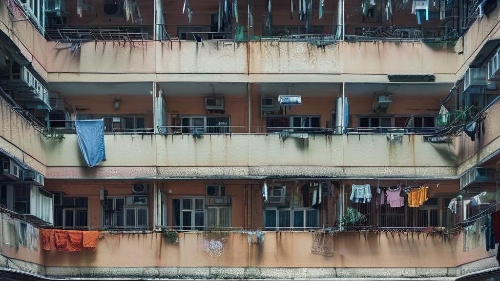
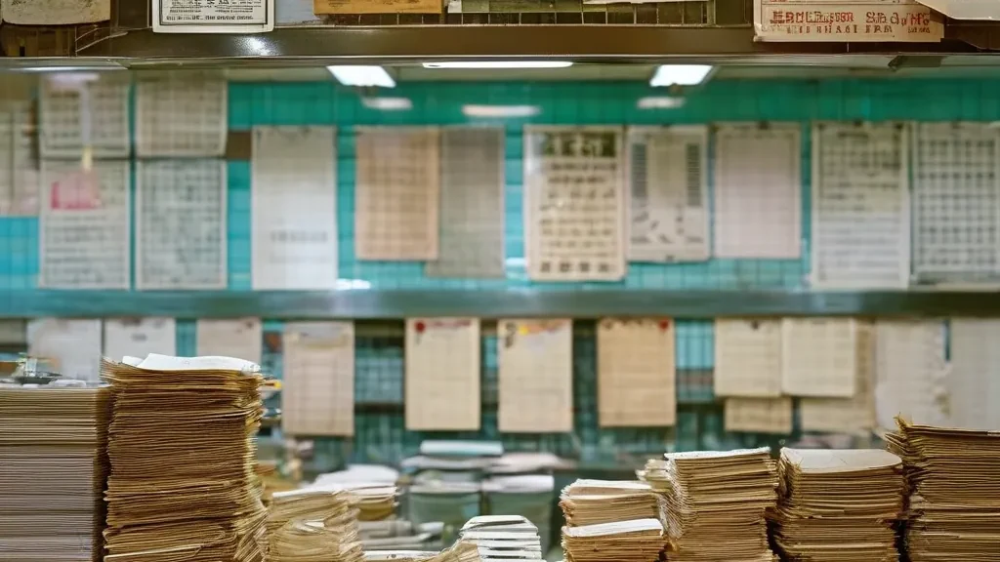
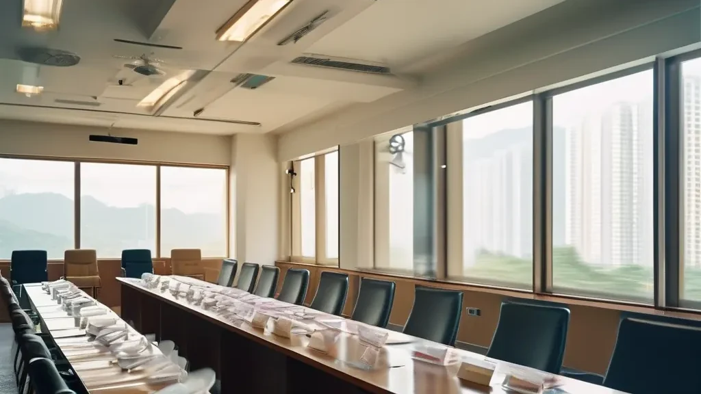
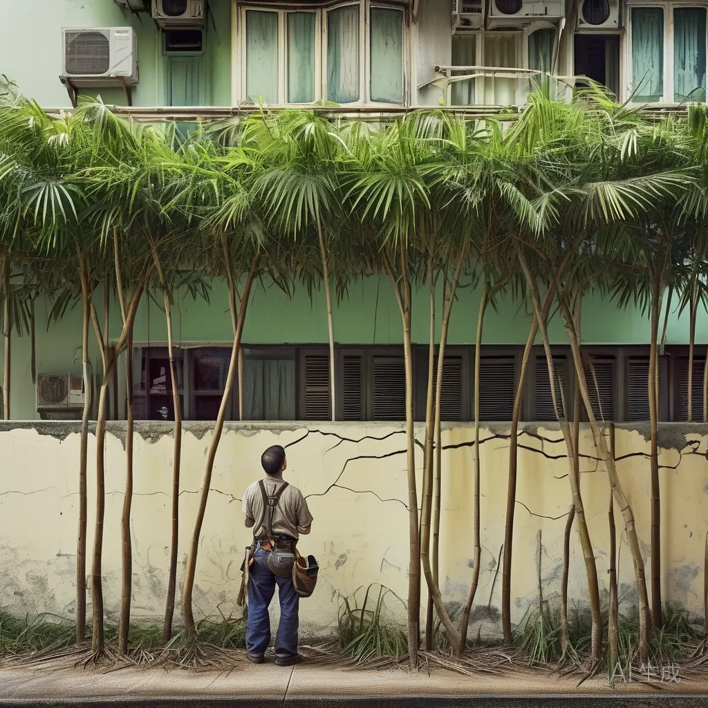
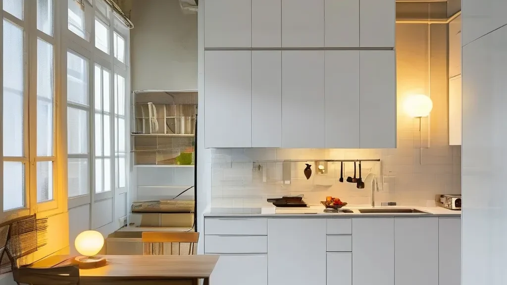

15個屋苑墮圍標陷阱97人被捕：雄哥教你三分鐘查清「驗樓令」真假

📍 場景：土瓜灣 1972 年落成八層舊樓 380 呎｜主訪：雄哥（行內人叫雄哥，做開現場）｜記錄：雲蕾｜日期：2026年11月24日 20:09:34｜WhatsApp 報價：852 5190 2328
序幕：凌晨三點半那條頭條，寫住「驗樓令」三個字
11 月 24 日凌晨三點半，報紙 A1 頭條出街：15 個屋苑或住宅大廈墮入圍標陷阱，涉及工程合約總額超過 1.3 億元。事發係 11 月 23 日，由保安局統籌、聯同警務處、廉政公署及競爭事務委員會組成的打擊樓宇維修工程圍標聯合特遣隊，在 11 月 16 日至 23 日進行第二輪行動，瓦解另一個圍標集團。
數字係咁：行動涉及 15 個屋苑或住宅大廈、合約總額逾 1.3 億元，阻止了兩份合共約 760 萬元的維修合約。被捕 33 人，包括 11 間承建商的 21 名董事及 1 名職員、4 間工程公司的 3 名董事及 2 名職員，以及 6 名業主立案法團成員，部分人有黑社會背景，涉嫌偽造文書、串謀詐騙等。連同同一個集團在其他行動中被捕的人，合共 97 人。上個月 11 月 5 至 6 日首輪行動已經拘捕 28 人，涉 12 份已批出、約 1 億元的合約。
手法同以往相似：預先買入單位滲透法團、安排職業法團成員出任要職、收買或恐嚇專業建築人士做橡皮圖章、以「幽靈標」和「豬仔標」操控招標、用虛假協議和假帳清洗得益。
但我睇完整篇報導，最刺眼唔係 1.3 億，亦唔係 97 個人。係一句：集團訛稱業主嘅大廈已經收到屋宇署發出的強制驗樓通知書，用嚟營造工程急需開展嘅假象。
我睇完即刻翻出上個月幫一戶睇過嘅文件。因為呢一招，我見過。
第一幕：雄哥第一反應——最貴唔係價錢，係「冇人知真假」
土瓜灣一幢 1972 年落成的八層舊樓，一梯兩伙，冇電梯。業主麥太住三樓，380 呎兩房，老公做夜更，個女讀中四。十月中她打電話上來，話法團開會當晚就要表決大維修，每戶四萬幾，叫我們上去睇一睇間屋，「趁裝修一齊做埋」。她自己室內都想翻新，廚房櫃門甩咗，睡房衣櫃發霉。
上到去，她把兩張紙攤在飯桌上。一張是「強制驗樓通知書」影印本，一張是承建商報價單，每戶四萬幾。她指住影印本上一個印章位問我：「雄哥，呢個係咪真？我唔識睇。」
「我第一句同你講：我唔會幫你判斷真偽，因為我唔係屋宇署。但我知道三樣嘢可以自己查，而且免費。查唔到，你就唔好簽。」
結果係：管理處攞唔出正本，亦冇簽收紀錄；屋宇署網頁查唔到呢幢大廈獲發強制驗樓通知書；法團主席手上嗰份，來歷講唔清。
你可能會問，咁簡單嘅嘢，點解會有人中？因為「法定通知」四個字有心理壓力。一幢六十幾戶、住咗三十幾年嘅樓，開會當晚只要三幾戶怕「唔簽會被釘契」，氣氛就一面倒。而營造呢個氣氛嘅人，通常係坐喺你隔離、識你十幾年嘅街坊。
「咁即係點分？業主又唔係專業人士。」
唔需要專業人士。需要三個鐘，同一部手機。
第二幕：三個位可以自己核，唔需要專家
第一，驗樓令。強制驗樓計劃下的法定通知係正式文件，有屋宇署名義、通知編號、指明你要檢驗乜嘢範圍、幾時之前要完成，並會送達法團或相關業主。所以第一件事永遠係要睇正本：影印本、截圖、WhatsApp 轉發一律唔算。第二件事，自己上屋宇署網頁查大廈有冇獲發通知，唔需要靠人代查。第三件事，問管理處有冇簽收紀錄。三樣對唔上就停手。
第二，標書數目唔等於競爭。新聞裡面提到「幽靈標」同「豬仔標」，講白啲：幽靈標係名義上有幾間公司入標，實際上係同一班人、同一部影印機、幾塊招牌；豬仔標係搵人陪標，一齊把價錢抬上去或者做一個「合理最低價」。分辨方法好土但有效——睇公司地址、電話、董事有冇重疊；睇標書排版同字體係唔係同一個模；睇報價係唔係貼得太近；睇開標當日有冇人發問。如果顧問公司寫標書規格、又推薦承建商，你要問一句：兩邊有冇關係？要求顧問書面申報利益。
第三，授權票。唔好簽空白授權票，唔好簽「你幫我決定」。自己去開會，要求逐項表決，會議紀錄要副本。你唔去，你嗰票就係別人嘅手裡。
以上三樣，唔使錢、唔使請專家、唔使睇圖則。需要嘅只係一樣：唔怕被街坊話你麻煩。


第三幕：對業主同對師傅，各自三件事
對業主，三件事。第一，任何「今日唔簽就趕唔切」嘅說話，當紅旗。真正嘅法定通知有明確期限，通常以月計，唔會要你今晚十二點前決定。第二，大維修未清之前，唔好做全爆式室內裝修。棚架期外牆會震、公用喉可能改位，你全屋做咗，之後外牆渗水，櫃同地台全部要拆。先做局部同可移動嘅定制，等外牆收口再補。第三，唔好怕舉報。當局設有反圍標熱線 182 000，就係畀業主喺簽約前問一句。
對師傅同我哋自己，三件事。第一，唔接「幫手遞文件」嘅委託。文件真偽唔係我哋判斷，但簽名係我哋嘅。第二，報價一定要分項，唔好寫「一式」。圍標集團最鍾意壓價搶單，中咗之後用「一式」不停加錢，最後找數嘅係業主。第三，棚架期嘅施工次序要排清楚：室內先做免鑽牆、可移動嘅嘢，外牆工程完再收口。呢個次序做錯，等於白做。
麥太最後冇簽嗰晚嘅報價。她要求三份標書分項列出、要求開標有見證人、她自己去開會投票。三個月後重新招標，中標價比原本低一截。她單位先做局部定制——到頂衣櫃、廚房換櫃門、浴室做防潮板同免鑽牆層架，套餐落在 $35,000 至 $38,000 呢個區間（故事報價，實際以度尺為準）。她講咗一句我記得：「我唔係想慳，我係想知我簽咗啲乜。」

尾聲：維修價唔係由最貴嗰份標書決定
呢單案 15 個屋苑、逾 1.3 億元合約、97 人被捕，聽落好似離你好遠。但起點就係你手上嗰張影印本，同隔離鄰舍一句「唔簽就趕唔切」。
我做現場咁多年，見過太多業主喺最慌嘅時候簽最貴嘅名。樓價係市場決定，但一棟樓嘅維修價，好多時係由最怕麻煩嗰個業主決定。
你肯花三個鐘去查正本、睇標書、自己去開會，就冇人可以用一張影印本，賺你三萬。

❓ 樓宇維修三問
Q1：我點知自己棟樓有冇收到強制驗樓通知書？
三步。第一，向法團或管理處要求睇正本，並索取簽收紀錄；法定通知係正式文件，有屋宇署名義、通知編號、檢驗範圍同期限，影印本同截圖唔算。第二，自己上屋宇署網頁查大廈是否已獲發強制驗樓通知書，唔需要經第三者代查。第三，如果三方面都對唔上，先要求法團暫緩表決，搞清楚再開會。任何以「已收驗樓令」為由催促即晚簽約嘅做法，都應該停一停。
Q2：大廈維修每戶四萬幾，算唔算貴？
冇有一條適用全港嘅價。判斷唔係睇總數，係睇分項：外牆修葺、棚架、防水、公用喉、消防裝置各自幾錢、數量幾多、用乜嘢材料。同一幢樓，三份標書嘅分項單價可以差幾成。要求每份標書分項報價、要求顧問書面申報同承建商有冇關係、要求開標有見證，呢三樣比「邊份平」更重要。有懷疑可以致電反圍標熱線 182 000。
Q3：大廈做緊大維修，我單位可唔可以做室內裝修？
可以做，但要排次序。棚架期外牆會震動、可能有塵同水，公用喉同去水位亦有機會改動，所以唔建議做全爆式裝修。先做唔涉及外牆同結構嘅部分：免鑽牆到頂衣櫃、可調腳地台、換櫃門、防潮層架，全部可以拆走再裝返。等外牆收口、防水測試完成，才做廚房浴室呢類濕區，同埋最後嘅收口條。落單前同管理處確認施工時間同保護措施，就唔會同大維修撞期。
本文配圖均為 AI 場景示意圖，僅供場景參考，並非真實工地照片或業主影像。文中個案人物為化名，價格為故事報價，實際以度尺及現場情況為準。
想知你個單位裝修要幾錢？
📱 一鍵 WhatsApp 雄哥